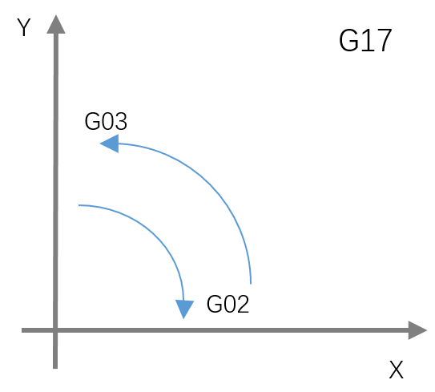

Функции интерполяции задают перемещение осей, то есть траекторию движения инструмента.
При абсолютном задании G00 на ускоренной скорости перемещает инструмент в заданную точку системы координат детали; при инкрементальном — в точку, смещённую от текущего положения на заданную величину.
G00 IP;
IP — при абсолютном задании: координаты конечной точки; при инкрементальном: величина перемещения инструмента.
G00 X0 Y10 F500; — перемещение выполняется на ускоренной скорости, заданной в настройках станка.Перемещает инструмент по прямой.
G01 IP_ F_;
IP_ — при абсолютном задании: координаты конечной точки; при инкрементальном: величина перемещения инструмента.
F_ — подача инструмента.
G01 αα ββ Ff;
Скорость по оси α:
Скорость по оси β:
Линейная интерполяция: G91 G01 X100.0 Y100.0 F200.0;
Подача поворотной оси: G91 G01 C-80.0 F400.0; — подача 400 град/мин.
Производитель задаёт для каждой оси верхний предел подачи резания F. Если фактическая подача (с учётом коррекции) превышает предел, она ограничивается этим пределом; единица — мм/мин.
Если после G01 координаты не указаны, инструмент не движется — система лишь переключает модальный режим перемещения на G01.
Перемещает инструмент по дуге в выбранной плоскости.
Дуга в плоскости XpYp: G17 G02/G03 Xp Yp I J/R F;
Дуга в плоскости ZpXp: G18 G02/G03 Zp Xp I K/R F;
Дуга в плоскости YpZp: G19 G02/G03 Yp Zp J K/R F;
При включении питания по умолчанию действует выбор плоскости G17:
| Элемент | Команда | Значение | |
|---|---|---|---|
| Выбор плоскости | G17 | Дуга в плоскости XY | |
| G18 | Дуга в плоскости ZX | ||
| G19 | Дуга в плоскости YZ | ||
| Направление вращения | G02 | По часовой стрелке (CW) | |
| G03 | Против часовой стрелки (CCW) | ||
| Конечная точка | Режим G90 | Две оси из X, Y, Z | Положение конечной точки в системе координат детали |
| Режим G91 | Две оси из X, Y, Z | Расстояние от начальной до конечной точки | |
| Расстояние до центра | Две оси из I, J, K | Расстояние от начальной точки до центра дуги | |
| Радиус дуги | R | Радиус дуги | |
| Подача | F | Подача вдоль дуги | |
Направления «по часовой стрелке» (G02) и «против часовой стрелки» (G03) для плоскости XpYp (ZpXp, YpZp) определяются при взгляде со стороны положительного направления оси Zp (Yp, Xp) в сторону отрицательного в декартовой системе координат.
